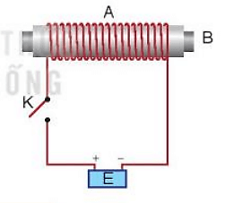
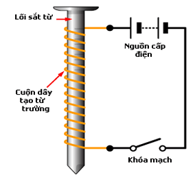

I. Nam châm điện
Nam châm điện là nam châm được tạo ra khi có dòng điện chạy qua cuộn dây dẫn.
Cấu tạo của nam châm điện gồm:
- Ống dây dẫn.
- Lõi sắt non đặt bên trong ống dây.
- Nguồn điện.
- Công tắc.

Lõi sắt non có tác dụng làm tăng từ trường của nam châm điện.
Khi đóng công tắc để dòng điện chạy qua cuộn dây thì cuộn dây trở thành nam châm điện.
Khi ngắt dòng điện thì từ trường biến mất.
II. Chế tạo nam châm điện đơn giản
1. Dụng cụ
- Dây đồng có lớp sơn cách điện.
- Một chiếc đinh sắt.
- Dây nối.
- Nguồn điện (5 – 6 pin).
- Công tắc.
2. Các bước tiến hành

Bước 1: Quấn dây đồng quanh đinh sắt rồi nối với nguồn điện qua công tắc.
Bước 2: Đóng công tắc để dòng điện chạy qua cuộn dây.
Bước 3: Đưa các vật bằng sắt lại gần để kiểm tra khả năng hút.
Bước 4: Tăng số pin để quan sát lực hút của nam châm điện.
Bước 5: Đổi chiều nguồn điện và dùng kim nam châm kiểm tra chiều từ trường.
III. Ứng dụng của nam châm điện
Nam châm điện có ưu điểm là có thể bật, tắt và thay đổi độ mạnh của từ trường rất nhanh nên được sử dụng rộng rãi.
Một số ứng dụng:
- Xe cẩu điện dùng để nâng sắt thép.
- Chuông điện.
- Máy phát điện.
- Động cơ điện.
- Rơ-le điện.
Ghi nhớ
- Nam châm điện chỉ có từ trường khi có dòng điện chạy qua.
- Lõi sắt non giúp tăng từ trường của nam châm điện.
- Có thể thay đổi lực từ bằng cách thay đổi cường độ dòng điện.
- Nam châm điện được ứng dụng rộng rãi trong đời sống và sản xuất.